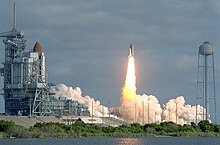
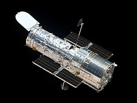
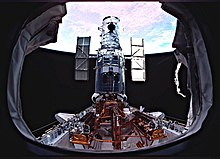
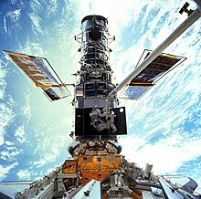
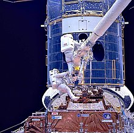
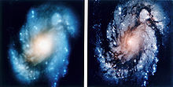
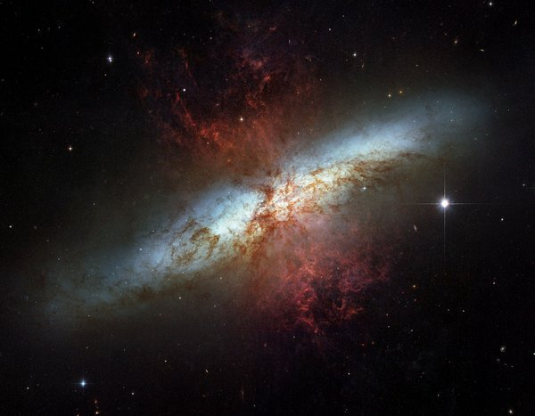

Космический телескоп «Хаббл»
Космічний телескоп «Хаббл» - унікальна багатоцільова орбітальна обсерваторія,
найбільша серед запущених у
космос у XX сторіччі.
Розташована на навколоземній орбіті з 25 квітня 1990 року.
Спільний проект НАСА та Європейського космічного агентства та входить до
число великих обсерваторій НАСА.
Розміщення телескопа в космосі дає можливість реєструвати електромагнітне випромінювання в діапазонах,
яких земна атмосфера непрозора; насамперед — в інфрачервоному діапазоні. Завдяки відсутності
впливу атмосфери роздільна здатність телескопа в 7-10 разів більше, ніж у аналогічного телескопа,
розташованого Землі.
Названа обсерваторія на честь американського астронома Едвіна Хаббла.
Едвін Хаббл
Едвін Пауелл Хаббл - астрофізик та космолог XX століття, що вніс вирішальний внесок у розуміння
структури космосу. У 1914-1917 роках працював в Єркській обсерваторії, з 1919 - в обсерваторії Маунт-Вілсон.
Член Національна академія наук у Вашингтоні з 1927 року.
Суттєво змінив розуміння Всесвіту, підтвердивши існування інших галактик, а не тільки нашого
(Чумацький шлях). Розглядав ідею у тому, що величина ефекту Доплера (у разі званого «червоне»
зсув»), що спостерігається у світловому спектрі віддалених галактик, зростає пропорційно відстані до тієї
чи іншої галактики від Землі. Ця пропорційна залежність стала відома як закон Хаббла (на два роки
раніше цей закон відкрив бельгійський учений Жорж Леметр). Інтерпретація червоного зміщення як
доплерівського ефекту була раніше запропонована американським астрономом Весто Слайфером, чиїми даними
користувався Едвін Хаббл. Однак Едвін Хаббл все ж таки сумнівався в інтерпретації цих даних, що призвело до
створення теорії метричного розширення простору (metric expansion of space, розширення Всесвіту),
що складається в майже однорідному та ізотропному розширенні космічного простору в масштабах усього
Всесвіту.
На честь Хаббла названо астероїд "№ 2069 Хаббл", відкритий в 1955, та космічний телескоп «Хаббл».
(20 листопада 1889, Маршфілд, штат Міссурі - 28 вересня 1953, Сан-Марино, штат Каліфорнія)
Запуск та початок роботи
Старт шатла "Діскавері" з телескопом "Хаббл" на борту
Спочатку запуск телескопа на орбіту планувався на жовтень 1986 року, але катастрофа «Челленджера» 28 січня призупинила програму "Спейс шатл" на кілька років, тому запуск довелося відкласти. Весь цей час телескоп зберігався у приміщенні зі штучно очищеною атмосферою, його бортові системи були частково включено. Витрати на зберігання становили близько 6 млн дол. на місяць, що ще більше збільшило вартість проекту. Вимушена затримка дозволила зробити ряд удосконалень: сонячні батареї були замінені більш ефективні, був модернізований бортовий обчислювальний комплекс та системи зв'язку, а також змінена конструкція кормового захисного кожуха для полегшення обслуговування телескопа на орбіті. Крім того, програмне забезпечення для керування телескопом було не готове у 1986 році та фактично було остаточно написано лише на момент запуску 1990 року. Після відновлення польотів шатлів у 1988 році запуск був остаточно призначений на 1990 рік. Перед запуском пил, що накопичився на дзеркалі, був видалений за допомогою стисненого азоту, а всі системи пройшли ретельне Тестування. Шаттл "Діскавері" стартував 24 квітня 1990 року та наступного дня вивів телескоп на розрахункову орбіту. Від початку проектування до запуску було витрачено 2,5 млрд. дол. при початковому бюджеті в 400 млн.; загальні витрати на проект, за оцінкою на 1999 рік, склали 6 млрд дол. з американської сторони та 593 млн євро, оплачених ЄКА. Вже в перші тижні після початку роботи отримані зображення продемонстрували серйозну проблему в оптичній системі телескопа. Хоча якість зображень була кращою, ніж у наземних телескопів, «Габбл» не міг досягти заданої чіткості, та допуск знімків був значно гірший від очікуваного. Зображення точкових джерел мали радіус понад одну кутову секунду замість фокусування в коло діаметром 0,1 секунди, згідно зі специфікацією. Попри невдалий початок роботи зусиллями космічної експедиції дефект вдалося майже повністю компенсувати, що надало змогу наблизитися до розрахункових характеристик. Подальші експедиції вдосконалили телескоп та за його допомогою здійснено багато важливих спостережень.
- 
- 
Обслуговування та ремонт
У зв'язку з дефектом дзеркала, що виявився, значення першої експедиції з обслуговування було особливо
велике,
оскільки вона мала встановити на телескопі коригуючу оптику. Політ «Індевор» STS-61 відбувся
2-13 грудня 1993 року, роботи на телескопі тривали протягом десяти днів. Експедиція була однією з
найскладніших за історію, у її рамках було здійснено п'ять тривалих виходів у відкритий космос.
Високошвидкісний фотометр був замінений на систему оптичної корекції, ширококутна та планетарна камера.
на нову модель (Ширококутна та планетарна камера 2) із системою внутрішньої оптичної корекції.
Камера мала три квадратні ПЗЗ-матриці, з'єднані кутом, та меншу «планетарну» матрицю вищого.
дозволу в четвертому розі. Тому знімки камери мають характерну форму вищербленого квадрата.
Крім цього, були замінені сонячні батареї та системи управління приводами батарей, чотири гіроскопи.
системи наведення, два магнітометри, також було оновлено бортовий обчислювальний комплекс. Також була
зроблена
корекція орбіти, необхідна через втрату висоти внаслідок тертя повітря при русі у верхніх шарах
атмосфери.
31 січня 1994 року НАСА оголосило про успіх місії та продемонструвало перші знімки значно кращого.
якості. Успішне завершення експедиції було великим досягненням, як НАСА, так астрономів,
які отримали своє розпорядження повноцінний інструмент.
- 
- 
- 
- 
Досягнення
За 15 років роботи на навколоземній орбіті «Хаббл» отримав 1,022 млн зображень небесних об'єктів — зірок, туманності, галактики, планети. Потік даних, що він щомісяця генерує у процесі спостережень, складає близько 480 ГБ. Загальний обсяг, накопичений за весь час роботи телескопа, на 2018 рік перевищило 80 терабайт. Понад 3900 астрономів отримали можливість використовувати його для спостережень, опубліковано близько 4000 статей у наукових журналах. Встановлено, що в середньому індекс цитування астрономічних статей, заснованих на даних цього телескопа, вдвічі вище, ніж статей, заснованих на інших даних. Щорічно у списку 200 найбільш цитованих статей не менше 10% займають роботи, виконані на основі матеріалів "Хаббла". Нульовий індекс цитування мають близько 30% робіт з астрономії загалом і лише 2 % робіт, виконаних з допомогою космічного телескопа.
 Галерея знімків телескопа "Хабл"- За допомогою виміру відстаней до цефеїд у Скупченні Діви було уточнено значення постійної Хаббла. До спостережень орбітального телескопа похибка визначення постійної оцінювалася в 50%, спостереження дозволили знизити похибку спочатку до 10%, а до теперішнього часу до 1,3%.
- «Хаббл» надав високоякісні зображення зіткнення комети Шумейкерів — Леві з Юпітером 1994 року.
- Вперше отримано карти поверхні Плутона та Еріди.
- Вперше спостерігалися ультрафіолетові полярні сяйва на Сатурні, Юпітері та Ганімеді.
- Отримано додаткові дані про планети поза сонячною системою, у тому числі спектрометричні.
- Знайдено велику кількість протопланетних дисків навколо зірок у Туманності Оріону.
- Доведено, що процес формування планет відбувається у більшості зірок нашої Галактики.
- Частково підтверджено теорію про надмасивні чорні діри в центрах галактик; на основі спостережень висунута гіпотеза, що пов'язує масу чорних дірок та властивості галактики.
- За результатами спостережень квазарів отримана сучасна космологічна модель, що є Всесвіт, що розширюється з прискоренням, заповнений темною енергією, та уточнений вік Всесвіту - 13,7 млрд років.
- Виявлено наявність еквівалентів гамма-сплесків в оптичному діапазоні.
- У 2013 року, після вивчення зроблених телескопом у 2004—2009 роках знімків, було відкрито супутник Нептуна Гіпокамп.
- У березні 2016 року астрономи за допомогою телескопа «Хаббл» виявили на знімках яскраву галактику GN-z11.